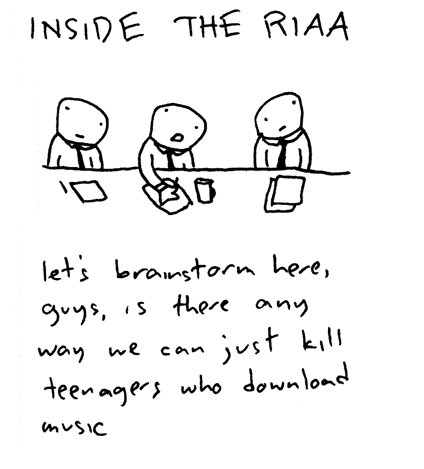

The News, Digested (02.03.2009)
It's been another busy week in the music industry. As ever, we've summarised the highlights for you.
. . .
U2 + BBC = DUBIOUS ETHICS?
By David Coleman
The music news this week has been dominated by U2. In fact, the Irish band's grizzled faces have been popping up far too regularly for my liking, and it seems I'm not the only one. This story from the Telegraph (I couldn't bear to link the original Daily Mail article) picked up on the unusual volume of U2-related content popping up on the supposedly neutral BBC's TV and radio channels. Now I'm the last person to complain about the use of my TV licence money - I'd be happy to pay £139.50 for Match Of The Day alone - but it seems obvious to me that the BBC has gone a touch overboard on their coverage of the band's latest opus. If it was Radiohead I could understand it, but U2? Hopefully we can redress the balance with our upcoming review...
. . .
RIAA Cutbacks Expose the Music Industry’s Failing Strategies
By Miguel Morelli
The Recording Industry Association of America (RIAA) is reportedly in financial trouble, as dozens of workers were laid off last week. Hypebot says that the “RIAA as you know it is probably history by Tuesday”, and predicts that a merger between the RIAA and their European equivalent, the International Federation of the Phonographic Industries (IFPI), is on the horizon.
“As you can imagine, the music community is not immune from the impact of these tough economic times,” said RIAA spokesperson Cara Duckworth.
But tough economic times or piracy cannot take full blame for the cutbacks, as the RIAA has repeatedly taken legal action against potential clients like Project Playlist and Spotify, thus damaging their reputation and ruining future licensing deals.
The new group will be formed by the RIAA, the IFPI, which is currently undergoing a trial against The Pirate Bay, and remnants of the British Phonographic Industry (BPI). With major label EMI having retracted support for the RIAA, we can surmise that the self-defeating strategy of suing potential customers for copyright infringement isn’t pleasing the major labels, and will result in a quick demise for the group if new adaptive tactics aren’t employed.
* Thanks to Toothpastefordinner.com for the excellent cartoon.
. . .
British Music Taking Over SXSW
By Miguel Morelli
 British music will be strong at this year’s SXSW in Austin, Texas from March 13-22. Over 190 British acts have been invited to perform at the festival, along with 350 British companies and 500 delegates. As far as bands go, Gallows, Laura Marling, The Whip, We Have Band, The Hot Melts, Skibunny, Friends Electric, DANANANANAYKROYD, Wild Beasts and Temper Trap are but a few of this year’s highlights.
British music will be strong at this year’s SXSW in Austin, Texas from March 13-22. Over 190 British acts have been invited to perform at the festival, along with 350 British companies and 500 delegates. As far as bands go, Gallows, Laura Marling, The Whip, We Have Band, The Hot Melts, Skibunny, Friends Electric, DANANANANAYKROYD, Wild Beasts and Temper Trap are but a few of this year’s highlights.
Various panels will represent the UK with topics such as Green Track #3: British Innovations, where moderators Karen Emanuel (Key Production) and Alison Tickell (Julie's Bicycle) will discuss how the UK is at the forefront of environmental issues, and Licensing Music In A Converging World, moderated by Executive Editor of Music Confidential, Susan Butler, which also includes BBC's Peter Bradbury and Kenny McPherson from Chrysalis Music North America.
Brent Grulke, SXSW Creative Director, said that “British Music is always stays a step ahead,” and that the British Music effort has the ”ability to work towards a common end and forge alliances across the public and private sectors, between big and small business, well- known and unknown artists is unmatched.”
This year SXSW is betting heavily on the Brits, so if you’re planning on attending the festival, make sure you don’t miss the events at the "Latitude 30" nightclub from March 18-22! [Altsounds.com]
. . .
UK File Sharers Still Buy Music
By Miguel Morelli
A survey conducted from December through January into UK consumer's attitudes towards music and illegal music downloading shows that 46% of respondents use peer-to-peer (P2P) networks like Bittorent and Limewire, but 83% say they still pay for music in some form. At least 3 out 4 people know that illegal downloading is wrong, but don’t consider the offence “serious enough”.
Most importantly, more than half of all illegal downloaders are still spending money on music, supporting previous claims that file-sharing actually bolsters music purchases.
The study ultimately shows that as P2P networks become easy to navigate, consumers are better informed and are more likely they will be willing to spend money on recorded music and live gigs.
Music consumption is a complex issue, and from a financial perspective, perhaps the major labels are assuming too much when someone downloads a song. Does an illegal download equal a lost sale?
. . .
Millionth iPhone sold in the UK
By Miguel Morelli
Ars Technica reports that carrier O2 has sold its millionth iPhone in the UK during the most recent quarter. While the news is uplifting, the iPhone isn’t selling very well in comparison to other countries where it’s available. The company noted, however, that there was "increased activity around the iPhone towards the end of the year”, so if Apple was swimming in money before, they can expect a flood of cash if sales continue to rise.
2 March, 2009 - 18:27 — No Ripcord Staff